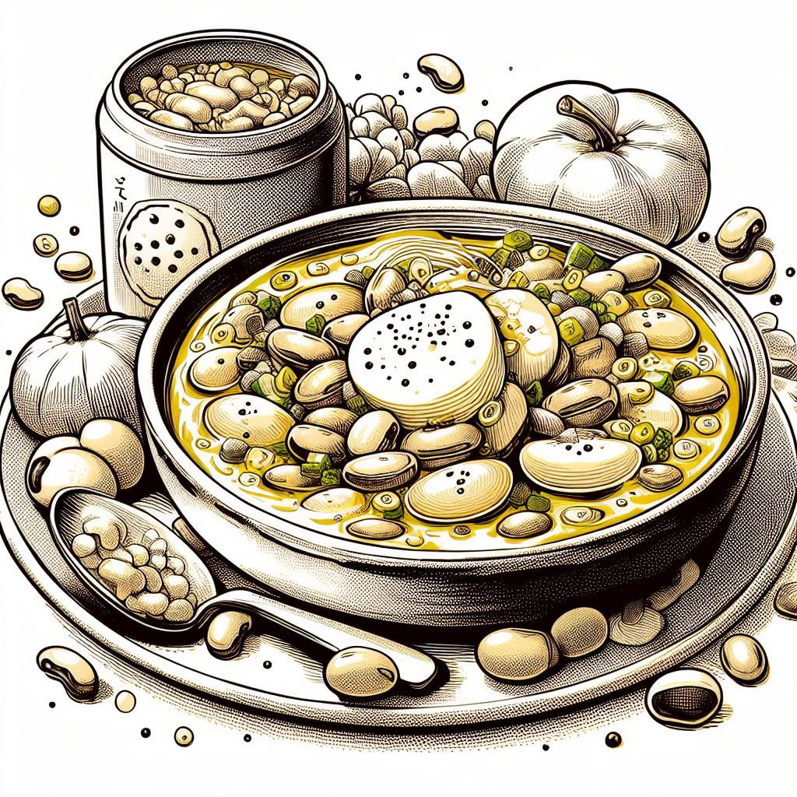

Mom's Butter Bean Soup

Description
My mom’s butter bean soup is pure comfort food to me. She made it weekly in a slow cooker, and this is my sped-up stovetop version. Add chopped cooked ham to make a hearty main dish if desired, or use vegetable broth to make it vegetarian. For a thicker soup, smash some of the beans using a large spoon.
Ingredients
- 1 tablespoon olive oil
- 1 small onion, chopped
- 1 large carrot, chopped
- 2 stalks celery, sliced
- 2 cloves garlic, minced
- 1/4 teaspoon dried marjoram
- 1/4 teaspoon dried parsley flakes
- 1/4 teaspoon dried thyme
- 5 cups chicken broth
- 4 (14.5 ounce) cans butter beans, drained
- 1 tablespoon distilled white vinegar
- 1/2 teaspoon salt
- 1/4 teaspoon ground black pepper
Steps
- Heat olive oil in a large stock pot over medium-high heat. Add onion, carrot, and celery, and cook and stir until onion is translucent, about 3 minutes.
- Add garlic, marjoram, parsley, and thyme. Cook until fragrant, about 2 minutes more.
- Stir in chicken broth, butter beans, vinegar, salt, and pepper, and bring to a boil. Reduce heat and simmer for 30 minutes. Ladle into bowls and serve.